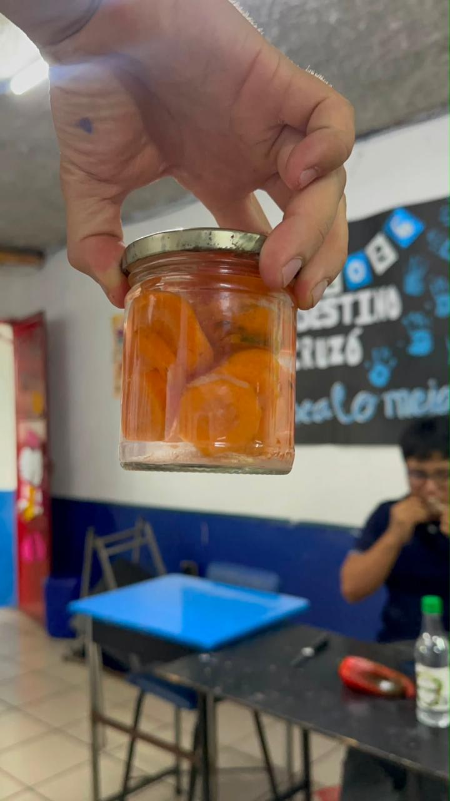
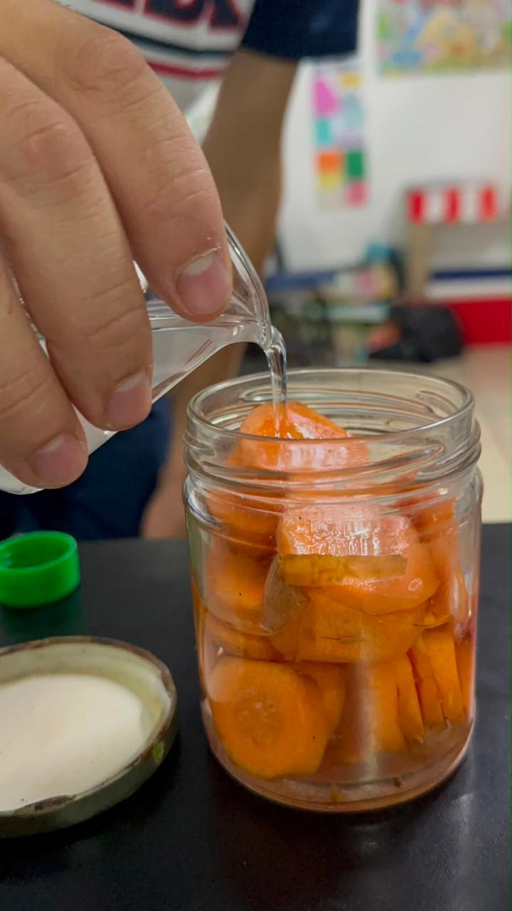
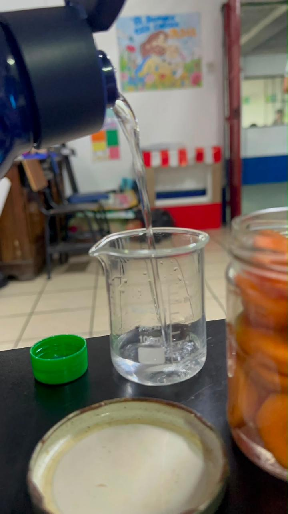
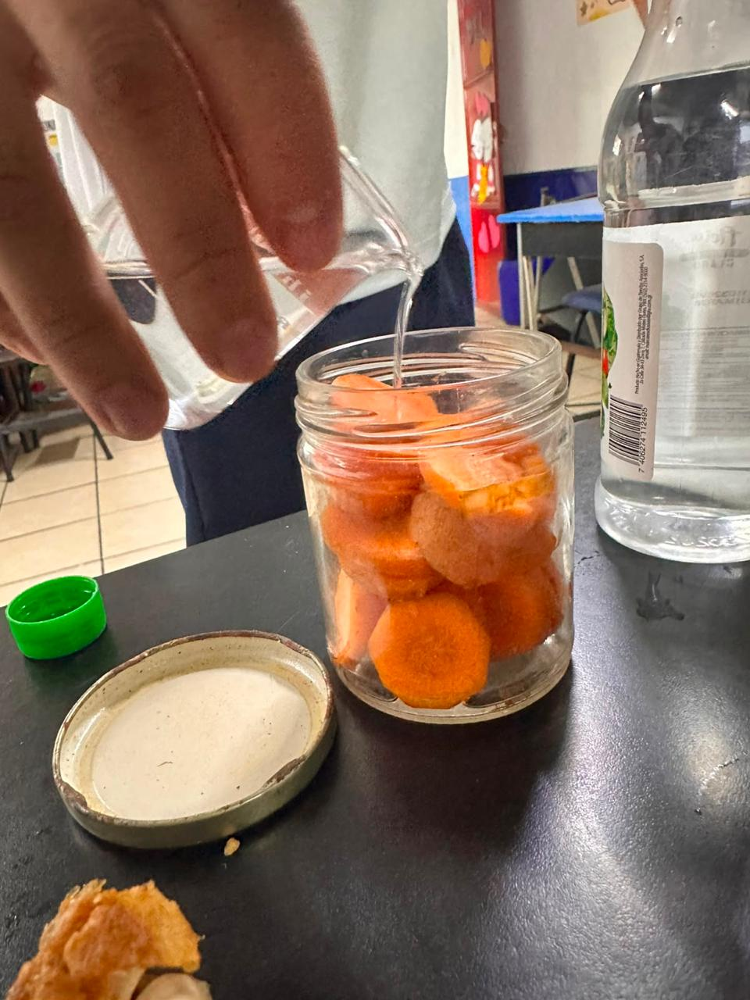
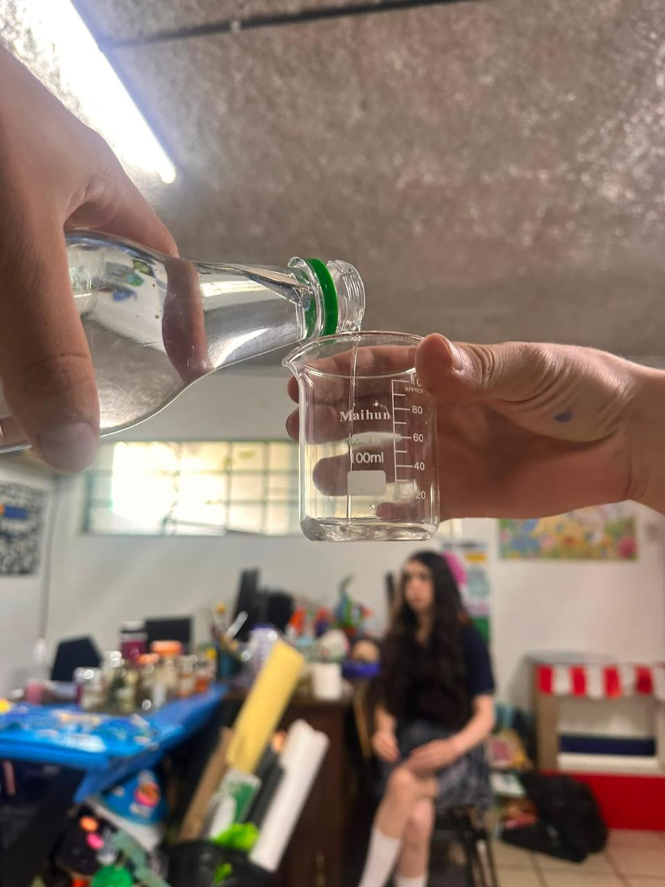
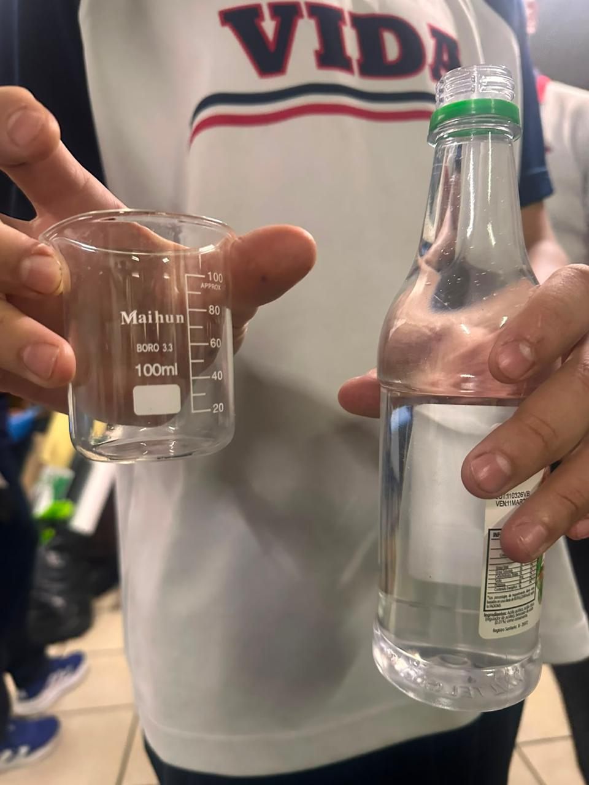

Proceso de conservación de alimentos mediante vinagre, sal y especias.
El encurtido es una técnica de conservación que utiliza vinagre, sal y especias para prolongar la duración de los alimentos. Este proceso aporta sabores únicos y permite conservar vegetales durante más tiempo.


Los ingredientes más comunes son pepinos, zanahorias, cebollas, coliflor, agua, vinagre, sal y diferentes especias.
Los vegetales se lavan, se cortan y se colocan en recipientes esterilizados junto con la mezcla de vinagre y especias.




Los encurtidos ayudan a conservar alimentos, aportan sabor a las comidas y forman parte de la gastronomía de muchos países.